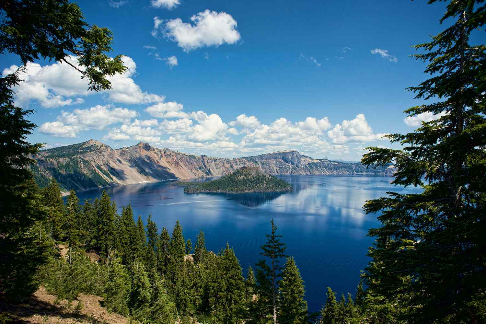

Our Mission

...
Alderwood State Wayside

Large trees characterize this forested park along Hwy 36 between Junction City and Triangle Lake. There's a picnic area, restroom, and short trail along the Long Tom River. Bring a lunch and relax! Purchased from Lane County in 1931. Day-use picnic facilities were originally developed by the Civilian Conservation Corps around 1935. According to local lore, during the prohibition era (1920s), liquor was distilled clandestinely at a nearby location called Burp Holler. In 1961, the name was briefly considered for application to the wayside but the proposal was unsuccessful.
recommendations on park trails to Markers
...